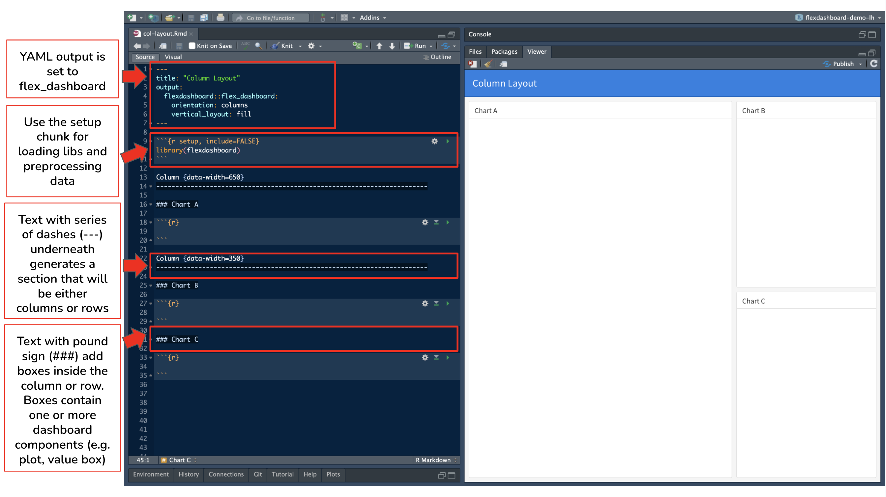
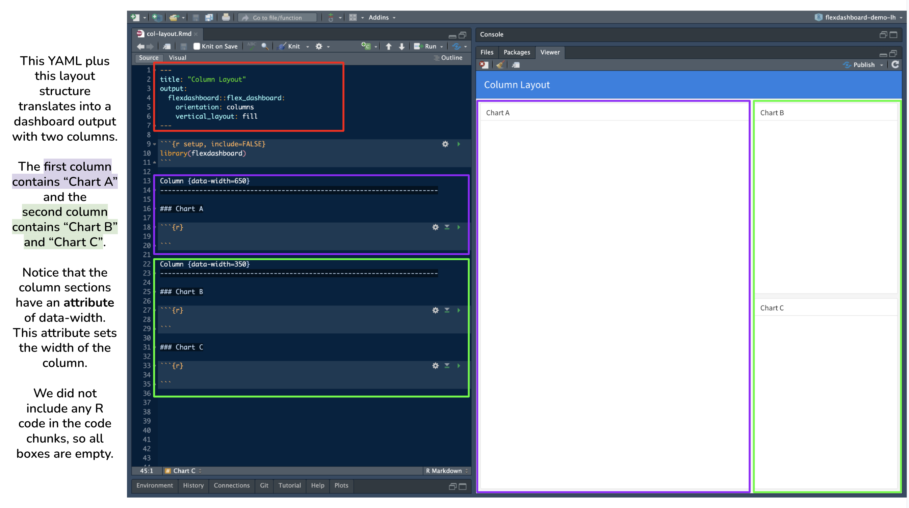

flowchart TD
A[Goal: Create a web-based application for data interaction]
A --> B{Shiny App}
A --> C{Flexdashboard}
C --> D(Build a Flexdashboard if:)
B --> E(Build a Shiny App if:)
D --> F[Interested in quickly creating a dashboard prototype]
F --> G[Have a preference for R Markdown]
G --> H[There are non-programmers who need to create or maintain dashboards]
H --> I[Want to blend narrative text with interactivity]
I --> J[Prefer a simpler, code-light approach]
J --> K[Dashboard requirements are relatively static]
E --> L[Dashboard requires a highly customized user interface]
L --> M[Dashboard needs to perform complex data analysis with user inputs]
M --> N[Dashboard requires real-time data updates]
N --> O[There are programmers familiar with reactive programming in R to create or maintain dashboards]
O --> P[Dashboard requires a multi-page app with navigation]
Learning Objectives
- Create and design customized dashboards using the R package
flexdashboard - Become familiar with different flexdashboard components and flexdashboard syntax
- Apply Markdown syntax, Shiny elements, and additional R packages like plotly to create visually appealing and interactive flexdashboards
4.1 What is a flexdashboard?
flexdashboard is an R package from RStudio that is built on top of R Markdown and Shiny. It allows us to create flexible, interactive dashboards using simple Markdown documents and syntax. Flexdashboards are designed to be easy to create, and support a wide variety of visualizations and interactive components. We can incorporate Shiny widgets and functionality into flexdashboards, making it a powerful tool for creating interactive reports and dashboards that can be shared with others.
4.2 Flexdashboard vs Shiny
4.3 Flexdashboard Layout + Features
Now let’s familiarize ourselves with how an .Rmd is structured to create a flexdashboard and what the dashboard output looks like using the default template.
There are a two default templates for flexdashboard in RStudio - one with a theme and one without. We’ll first look at the template without a theme. To create a flexdashboard .Rmd from a template click:
File -> New File -> R Markdown -> From Template -> Flex Dashboard


Flexdashboard Syntax
In the flexdashboard template to create the different sections in the dashboard, dashes (---) and equal signs (===) are being used (we’ll see the equal signs in action during the demo). The series of dashes and equal signs were a design choice by the flexdashboard creators to make the different sections stand out in the .Rmd, but are not mandatory to use.
| Flexdashboard Syntax | Equivalent Markdown Header Syntax |
|---|---|
|
|
|
|
|
|
Flexdashboard Attributes
In flexdashboard, we can add certain attributes to columns, rows, and boxes. This is similar to adding attributes to headings in typical .Rmd documents. For example, if we didn’t want a subheading to be numbered in a rendered HTML of a .Rmd, we would use ## My Subheading {.unnumbered}.
In both typical .Rmd and flexdashboard, the syntax for attributes is {key=value} or {.attribute}.
Some attributes to add to columns, rows, or boxes include:
{data-width=} and {data-height=} |
both of these attributes set the relative size of columns, rows, and boxes. See complete size documentation on the flexdashboard website |
{data-orientation=} |
sets the dashboard layout to either rows or columns. This is a global option set in the YAML. However, if your dashboard has multiple pages and you want to specify the orientation for each page, remove orientation: from the YAML and use this attribute instead |
{.tabset} |
divide columns, rows, or charts into tabs |
{.sidebar} |
creates a sidebar on the left side. This sidebar is typically used to place Shiny inputs and is an optional step to add Shiny elements to a flexdashboard. See full documentation and steps in section 5.3.1 Getting Started in the R Markdown: Definitive Guide |
{data-navmenu="name of page"} |
this attribute creates a new navigation bar heading with the specified page as an item in a drop-down menu. When clicked, the menu item takes you to the associated page. For example, if the syntax is # Foo {data-navmenu="Bar"}, “Bar” becomes a new heading in the navigation bar, and “Foo” is a page with dashboard components listed as a drop-down menu item under “Bar” |
{.hidden} |
excludes a specific page from the navigation bar |
Flexdashboard Components
The different components that can be added to a flexdashboard are:
HTML Widgets |
incorporates JavaScript data visualization tools and libraries into a flexdashboard. This includes features like interactive plots, maps and more. At this time there are 130 htmlwidgets available to use in R, check out the gallery of widgets |
| R Graphics | any chart, plot or graph that is created using any R package |
| Tabular Data | add tables using knitr::kable() for simple tables or use the DT package for interactive tables |
| Value Boxes | use valueBox() to display single values along with a title and optional icon |
| Gauges | gauges are a type of data visualization that displays values on a meter within a specified range |
| Navigation Bar | the navigation bar automatically includes the title, author, and date (if specified in the YAML). New pages are added to the navigation bar starting on the left side. There is also an option to add links to social media and the source code (specify this in the YAML) |
| Text | text can be added either at the top of the .Rmd before the setup chunk or in a box |
4.4 Demo: Creating a flexdashboard
The demonstration will include examples that showcase different flexdashboard features:
- Basic Flexdashboard from Template
- Interactive and Multiple Pages Flexdashboard
- Reactive Flexdashboard using
shinyelements - Themed Flexdashboard using
bslib
4.5 Publishing a Flexdashboard

If your flexdashboard does not have any Shiny components you can publish your flexdashboard using:
- RStudio IDE using the Publish Button and select a destination to publish to. See Posit’s documentation.
- GitHub Pages. Recall the lesson from Week Two’s coursebook, Publishing your analysis to the web with GitHub Pages.
If your flexdashboard does have Shiny components you will need to publish to shinyapps.io. This can be done using:
- RStudio IDE using the Publish Button.
- The
rsconnectpackage usingrsconnect::deployApp().
4.6 Additional Resources
- RStudio
flexdashboardvingettes (The articles under the “Articles” dropdown menu are particularly helpful!) - RStudio
flexdashboardExamples - R Markdown: The Definitive Guide Chapter 5: Dashboards by Yihui Xie, J. J. Allaire, and Garrett Grolemund
- htmlwidgets for R: Check out widgets featured either in the gallery or the showcase